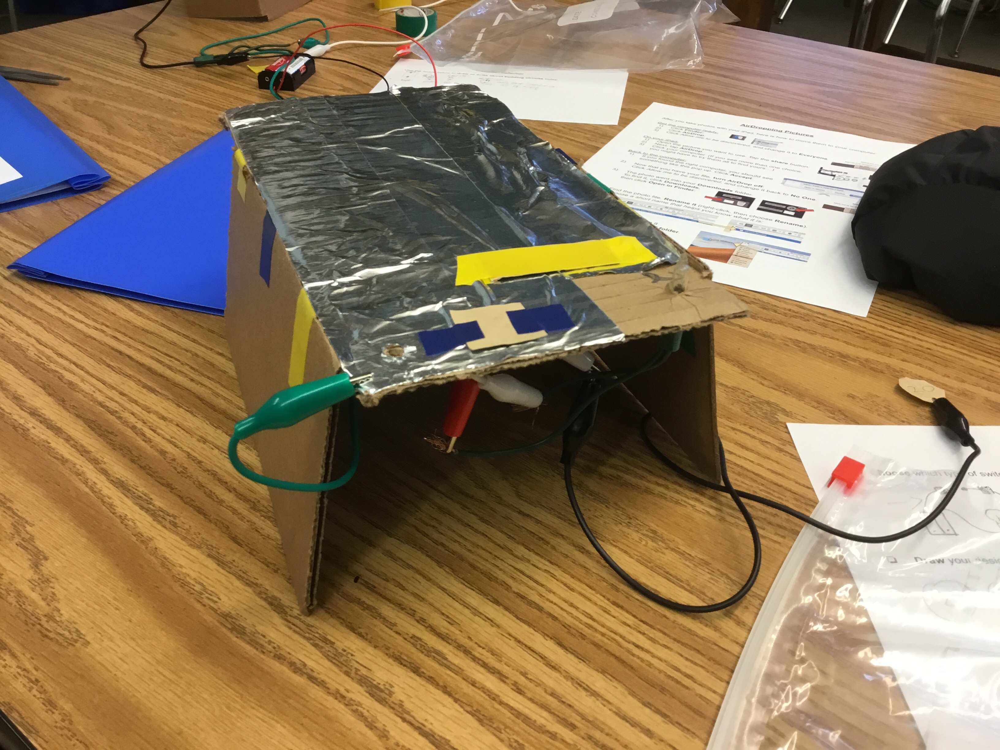

I'm 12, turning 13 in March, and I am in seventh grade and Murray Middle School. My favorite color is black and I have three dogs at the moment. Only two of them are mine, the third is my grandparent's dog that we are taking care of while they are on vacation in Florida, and they are going to be moving around to other states through out their vacation. When I'm not doing It projects I'm reading, doing little crafts like knitting, making earrings and bracelets, on my phone, or eating.
This was a circut map we made before the whole project showing us what double circuts were.
This was the drawing we had made before we started building. We used this to plan our project out.
This is picture of the Circut Art me and Judah made together. This was it when we finished it.
This is our completed project. You "roll" the "dice" and, oh look you rolled a natural 20. Good job!
You rolled a 2. Too bad.